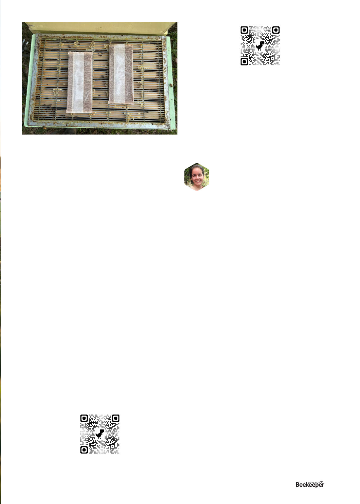

ishes. This can be seen around the world with, for example,
Bayvarol simply not being effective anymore due to having
become a heavily used treatment option in various countries.
Back-to-back use of a miticide with the same mode of action
(they kill the mites the same way) is one major route of resist-
ance.
Non-synthetic treatments such as formic acid and oxalic
acid are much more difficult to use. They are much more
variable and dependent on climatic conditions, hive strength
and mite loads. In most cases non-synthetic treatments are
simply not effective enough in reducing mite numbers below
threshold once mite numbers in colonies are too high or in
areas of high reinfestation. At the same time the way these
acids work against mites makes it very hard for mites to build
up any resistance.
During times of heavy reinfestation some beekeepers may
not have any other options than to rely on synthetic treat-
ments. This hopefully will change once mite numbers plateau
out in the environment. For more information on the miticides
used in this trial use the QR codes below:
Dr Madlen Kratz works with the Department of
Primary Industries in NSW as the Honey bee Industry
Development Officer. Her background is in research
on honey bee nutrition, foraging behaviour, and
pollination, focusing on honey bee health and
productivity for the Honey Bee and Pollination
Industries. Current areas of work include evaluating
supplementary feeding practices for their costs and
benefits to beekeepers, assessing alternative pasture
species for their value to honey bees, and evaluating the
attractiveness of blueberry flowers to bees under crop
covers.
• Figure 3. Formic Pro pads applied above the brood nest.
• Bayvarol resources including permit, safety data sheet, product
information and usage video can be found at Varroa.org.au:
• Formic Pro resources including permit, safety data sheet,
product information and usage video can be found at Varroa.org.
au:
Vol. 127 | No. 4 |
| 27